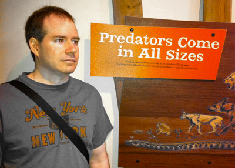

The Oregon Film Festival was established in 2012 with the simple idea: bring films to Oregon. Then the founders went beyond that notion to call them independent films. Then they further complicated the idea by discussing genres like local films, Northwest films, and maybe even U.S. films. Then they really went outside the box with the idea that they'd bring in international films, also known as foreign films to those of us in the Northwest.

Robin Cheese-Marten (esq.) established the Oregon Film Festival and began a long tradition of bringing obscure, non-traditional, thought-consuming, and invocative films to the Oregon region. He didn't start with a plan, but what he learned along the way became one. It was, as he put it, really kind of neat.
Mr. Cheese-Marten (esq.) lives in his mother's old basement which he plans to remodel someday. He and his iguana, Ernie, take great pride in their rustic furniture and teapot collection.
To deliver the unexpected in film in surprising venues and with surprising audience members. It's an event that will shape and mold you like modeling clay. Your brain and even your heart are like the clay in this analogy.
"We will reshape your head and your heart!" is our motto.